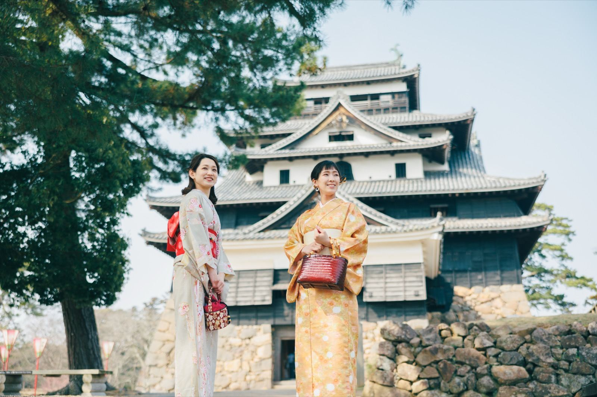

松江城・小泉八雲ゆかりの松江観光


松江城
松江城は、全国に現存する12天守のうち、国宝に指定された5城の一つです。堀川に囲まれた城郭の中心に天守があり、江戸時代の姿を伝える木造建築です。天守の内部を見学でき、最上階からは宍道湖や城下町を一望できます。晴れた日には大山（だいせん）も見えます。ハレ・マカワオは、その大山の麓にあります。
天守を見学したあと城の北側へ向かうと、堀川沿いの塩見縄手通りに出ます。
松江城 基本情報
- 住所: 島根県松江市殿町1-5
- 開館時間・入場料: 最新情報は松江城公式サイトでご確認ください
- 駐車場: 城山公園内に複数あり（有料）
- アクセス: 松江駅から路線バス「ぐるっと松江レイクライン」利用が便利
堀川めぐり
「堀川めぐり」は、松江城を囲む堀川を小舟でめぐる遊覧船です。屋根の低い橋をくぐるときに船の屋根が下がる仕掛けが名物で、乗客も頭を下げて橋をくぐります。船頭さんの案内を聞きながら、約50分かけて堀を一周します。乗船券・時刻表の詳細は最新の公式情報をご確認ください。
朝ドラ「ばけばけ」と小泉八雲
2025年度後期のNHK連続テレビ小説「ばけばけ」（2025年9月29日〜2026年3月27日放送、全125回）は、小泉セツと、夫で文豪の小泉八雲（ラフカディオ・ハーン）をモデルにした物語です。ヒロインの松野トキ（セツのモデル）を髙石あかりが、夫ヘブン役をトミー・バストウが演じました。舞台は明治の松江です。
小泉八雲は明治時代に来日し、松江で英語教師を務めながら、日本の怪談や風俗を世界に伝えた文豪です。代表作「知られぬ日本の面影」には、松江の自然と人々が描かれています。
塩見縄手・小泉八雲旧居と記念館
塩見縄手（しおみなわて）は、松江城北側の堀沿いに続く通りで、江戸時代の武家屋敷が今も残っています。通りには松並木と石畳が続きます。
通りの西端には、小泉八雲旧居と小泉八雲記念館が隣り合って建っています。旧居は八雲が松江滞在中に実際に暮らした武家屋敷で、八雲が愛した日本庭園がほぼ当時のまま残されています。隣の記念館では、自筆原稿や遺愛品など八雲の生涯にまつわる資料を展示しています。
旧居・記念館の開館時間・入場料は最新情報をご確認ください。
出雲そば処 八雲庵
塩見縄手の通り沿いに、出雲そば処八雲庵（やくもあん）があります。元・松江藩武家「大石源内」の屋敷を改装した店で、日本庭園を眺めながらそばを食べられます。名物は割子そばと鴨南蛮です。
割子そばは出雲地方の伝統的な食べ方で、丸い漆器の重ね椀に盛った冷たいそばに、だしをかけていただきます。薬味は好みで調整できます。営業時間・定休日は最新の公式情報でご確認ください。
モデルコース
ハレ・マカワオを朝8時に出発し、松江の主要スポットをめぐって夕方に宿へ戻る日帰りの行程です。
※ 上記の時刻はすべて目安です。施設の開館時間・混雑状況によって前後します。
アクセス
- 移動手段: 自家用車またはレンタカーが便利（山陰道経由）
- 所要時間の目安: 車で約50分（大山町から松江市中心部まで。道路状況により前後します）
- 松江城周辺の駐車場: 城山公園内に複数あり（有料）。週末・連休は混雑するため早め到着を推奨
- 電車の場合: 米子駅からJR山陰本線で松江駅まで約40分、松江駅から城まではバスまたはタクシー
松江市内の観光には、松江城・塩見縄手・宍道湖などを結ぶ路線バス「ぐるっと松江レイクライン」が便利です。1日乗車券も販売されています（料金は最新情報をご確認ください）。
トップページへ戻る